Digital Pattern Generator
The Digital Pattern Generator (Patterns) lets you define the output on the digital lines, using standard types or user-defined types.
When a line is used by the Static I/O as an output element (Slider, Button, or Switch), this has priority over the signal configuration in Patterns.
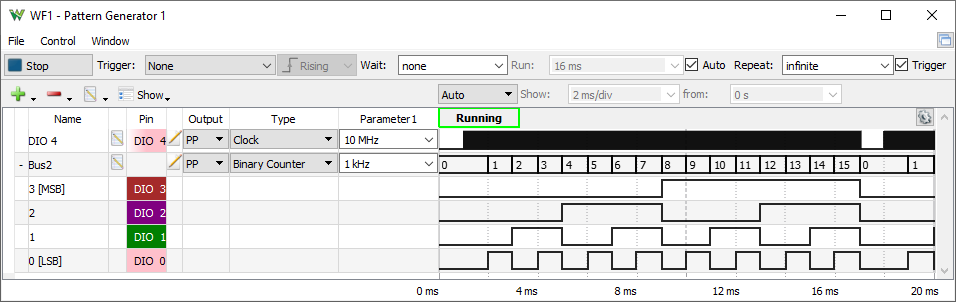
1. Menu
See Menu in Common Interfaces.
2. Control
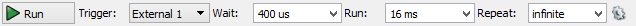
Run/Stop button: starts/stops the signal generation.
Trigger, Wait, Run and Repeat settings let you generate burst signals. See States for more information.
The dropdown contains the following options:
- Repeat Trigger: See States for more information.
- Auto Run: The run time is automatically adjusted to the longest period from all signals frequency or counter cycle.
- Edge: Selects between rising, falling or either edge for external and internal trigger signals.
3. Signals Grid
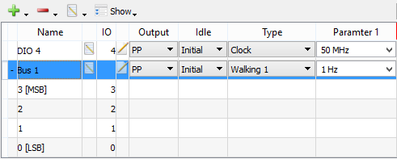
The Signals Grid allows you to customize the display of the signals that you are interested in.
The grid menu contains the following options:
The grid columns are as follows:
- Height: the row height can be changed in the first column.
- Expand/Collapse: each bus can be individually expanded or collapsed.
- Name: shows the signal or bus name.
- Edit: clicking on the edit icon of a signal or bus row opens the editor.
- Pin: shows the device digital IO pin number.
- Parameter: clicking on the edit icon of a signal or bus row opens the parameter editor.
- Output: by clicking on this column, a combo box lets you select the desired output for the corresponding signal or bus.
- Idle: selects the output for the idle state when the generator is not running (Config, Armed, Done, Stopped, or Wait state).
- Type: selects the type (constant, clock, pulse, random, custom, etc.) of signal or bus.
- Parameter #: adjusts the parameter values for the selected signal or bus. The values can be adjusted between the minimum and maximum values selected in the parameter editor.
The grid context menu opens on mouse right-click. This contains similar buttons as the grid toolbar's Add and Remove menus. The plot area context menu lets you adjust the color and line width.
 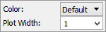
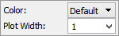
The waveform area is divided into three sections: top, bottom, and center.
On the bottom area, the time position can be adjusted by a horizontal left mouse button drag while the time base can be adjusted by a right mouse button drag.
- Top Area: In the top-left corner, the status label shows the state of the logic patterns. See Generator States for more information.
- Bottom Area: On the bottom section, the major time grids are displayed.
- Center Area: This area is used to display rows containing the graphical visualization of waveforms.
4. Property Editor
The property editor can be opened for the selected signal, bus, or interpreter under the grid toolbar edit menu.
4.1. Signal
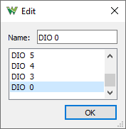
In the signal property editor, the name can be specified and the device pin changed.
4.2. Bus
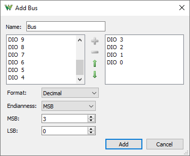
In the bus property editor, the following can be configured:
- Name: edit the displayed name of the bus.
- Available: shows the available signals.
- Selected: shows the selected bus signals. The signals can be added or removed with the left/right arrow keys or a mouse drag and drop. The order of the bus signals can be changed with up/down arrow keys or with a mouse drag and drop.
- Format: selects the values format of the bus.
- Binary values are displayed with “b” leading character.
- Decimal
- Hexadecimal values are displayed with “h” leading character.
- Vector values are displayed with “v” leading character. Vector value is the raw binary value without index.
- Sign and Magnitude
- Ones' complement
- Two's complement
- Endianness: selects between little and big endian, least significant bit (LSB) first, or most significant bit (MSB) first.
- LSB/MSB: selects the values for first and last indices, LSB, and MSB. The index values can be set so that the index remains within the -32 and +31 range.
4.3. ROM Logic
The ROM Logic channel allows creating combination logic or state machine.
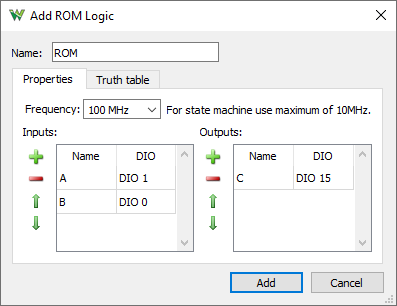
In the property editor, the name and update frequency can be specified, and the input and output digital signals can be selected.
The number of available input signals depends on the Patterns custom buffer size, log base two of size. The signals added for input as well as output can be used as state bits.
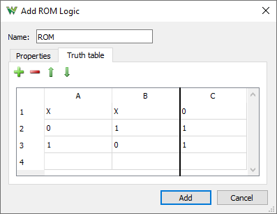
The truth table shows the inputs signals in columns on the left side and outputs on the right. Each row defines a combinational logic between input and outputs signals. The statements in consecutive rows might overwrite earlier ones.
The inputs signals for a statement can be X don't care, 0 logic low or 1 logic high.
The output signals can be 0 logic low, 1 logic high, 'input signal', or '/input signal' negation of an input signal.
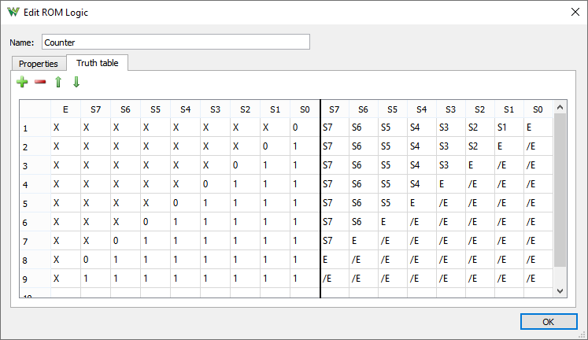
5. Parameter Editor
The parameter editor can be opened for the selected signal or bus under the grid toolbar's edit menu, under the context menu, or by double-clicking your mouse on the row.
5.1. Parameters
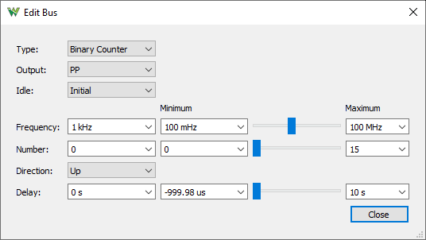
The type, output, and idle parameters have dedicated columns in the signal definition grid. For the other parameters, a minimum and maximum value can be specified and linearly changed using the track bar.
The Idle parameter lets you select the signal or bus output while not running.
The output type determines the output behavior of the signals and buses. For OD and OS signals, use external pull-up or pull-down resistors. The output types are:
- PP – Push Pull: The allowed values are 0 and 1.
- OD – Open Drain: The allowed values are 0 and Z. The bus value is computed by treating Z as 1.
- OS – Open Source: The allowed values are Z and 1. The bus value is computed by treating Z as 0.
- TS – Three State: The allowed values are 0, 1, and Z. The bus values that contain only 0s and 1s are shown as normal numbers. A question
mark is displayed for values that contain Z in at least one of the bus signals.
The possible parameters for different types are the following:
- Constant: By default, a newly added signal or bus is a constant with value Z.
- Output lets you select between PP, OS, OD, and TS.
- Idle lets you select the output value while not running.
- Constant lets you specify the signal(s) value.
- Clock: The parameters used to define a clock signal:
- Output lets you select between PP, OS, and OD.
- Idle lets you select the output value while not
running.
- Frequency lets you specify the clock frequency expressed in Hz. The maximum clock frequency is half of the digital base frequency.
- Duty lets you adjust the duty factor between 0% and 100%.
- Phase lets you adjust the clock phase between 0 and 360 degrees.
- Delay lets you adjust the initial delay.
- Pulse: The initial values for divider (Divide Init) and counter (Counter Init) specify the initially loaded values, initial delay, when entering in Running state. The Divider specifies the clock division. After dividing the 100 MHz clock by the divider value, we will obtain the rate which will be the frequency for the counter. When entering Running state, the initial divider value is loaded. When this expires, the value specified by divider will be loaded upon each expiration. When the counter initial value expires, the Low (or High) value is loaded. Upon the counter reaching the preset value, the level is toggled and the subsequent High (or Low) value is loaded. In case one of these is zero, the level is not toggled.
The parameters used to define a pulse signal:
- Output lets you select between PP, OS, and OD.
- Idle lets you select the output value while not running.
- Start lets you select the pulse to start low or high.
- Low/High lets you adjust the low/high counter values.
- Counter Init lets you adjust the initial counter value. Zero value sets the counter to a low or high value, depending on start parameter.
- Divider lets you adjust the divider value. The base frequency (100 MHz) will be divided by this value for the counter.
- Divider Init lets you adjust the initial divider value.
- Random: The random values are generated on the device. It is not possible to show a preview for this type. To see the output, use the Logic Analyzer instrument or generate custom/random data.
- Output lets you select between PP, OS, OD, and TS. In TS output, the result probability for output levels are the following: Z 50%, 0-low 25% and 1-high 25%.
- Idle lets you select the output value while not running.
- Frequency lets you specify the random output update frequency.
- Delay lets you adjust the initial delay.
- Custom: Using this type, the user may define a custom digital pattern. See Custom Plot for more information.
- Output lets you select between PP, OS, OD, and TS. In TS mode, the available device buffer size is half the one for other modes.
- Idle lets you select the output value while not running.
- Frequency lets you specify the sample update frequency.
- Delay lets you adjust the initial delay.
- Number: Using this type, the bus values will be generated as a constant value.
- Output lets you select between PP, OS, OD, and TS.
- Idle lets you select the output value while not running.
- Number lets you specify the bus constant value.
- Binary/Gray/Johnson/Decimal Counter: Using these types, the bus values will be generated as Binary/Gray/Johnson counter values.
- Output lets you select between PP, OS, and OD.
- Idle lets you select the output value while not running.
- Frequency lets you specify the bus value change rate. For example, at 1 kHz the binary counter will increment every 1ms.
- Number lets you select the counter start value for binary and Gray counters. A Johnson counter will always start with 0 value.
- Direction lets you select up or down counter direction.
- Delay lets you adjust the initial delay.
- Walking 0/1: Using these types, the bus values will be generated as a train of 0 or 1 bits walking left or right.
- Output lets you select between PP, OS, and OD.
- Idle lets you select the output value while not running.
- Frequency lets you specify the bit shift rate.
- Direction lets you select left or right shift direction.
- Length lets you specify the train length of the 0 or 1 bits.
- Delay lets you adjust the initial delay.
5.2. Custom Plot
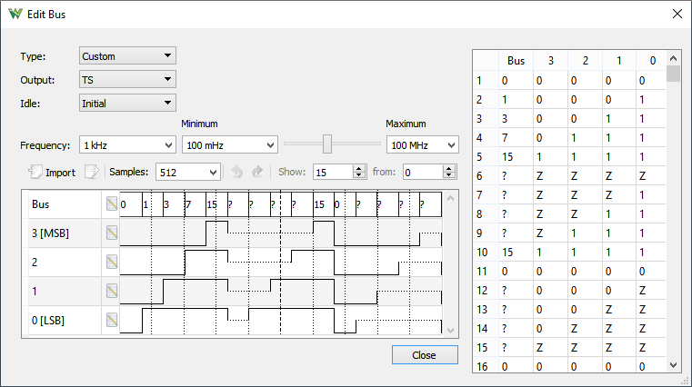
The custom plot shows the custom data buffer and allows mouse editing. By pressing a mouse button, the value of the corresponding element in the buffer will be changed depending on the vertical position in the row and on the allowed values. By dragging the mouse, multiple buffer positions can be edited with the same value (all positions between the start and the end of the operation). On a bus waveform, all the signals will be changed to the 0, 1, or Z value. Dragging with the left mouse button and changing the vertical position can change the entered value. Dragging with the right mouse button keeps the initial value.
The Samples allow you to specify the used device sample buffer size. On generation, the buffer is repeated while running.
The Undo and Redo buttons allow you to revert the recent changes.
The Show allows you to select a smaller number of samples than the buffer size starting from the specified value.
The second column opens a prefill dialog where constant, pulse or random can be generated for signals and binary counter bus.
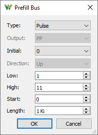
5.3. Custom Import
The supported import file types are Comma Separated Values (.csv) and Tab-Delimited Text files (.txt).
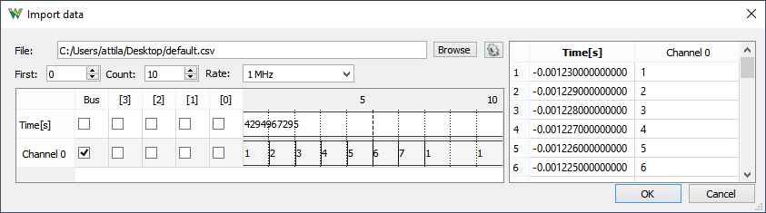
- File: it shows the opened file path and a new file can be selected with the Browse button. The import options can be adjusted under the menu next to the Browse button.
- First: specifies the first sample position to be imported.
- Count: specifies the number of samples to be imported. This can be set up to the minimum between the number of samples in the file or the device buffer size.
- Rate: specifies the sample rate for signal generation.
- Plot:
- File column: shows the file column names.
- Rows: the file data plot.
- [#] columns: the checkboxes let you select for which signal file data column to import.